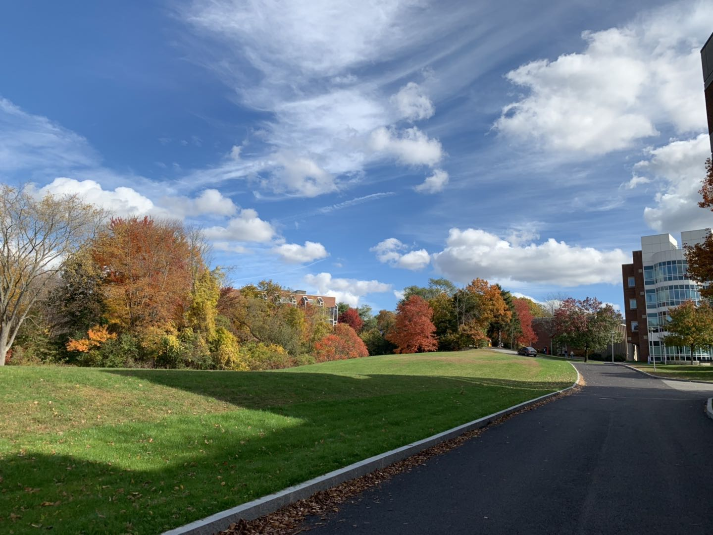
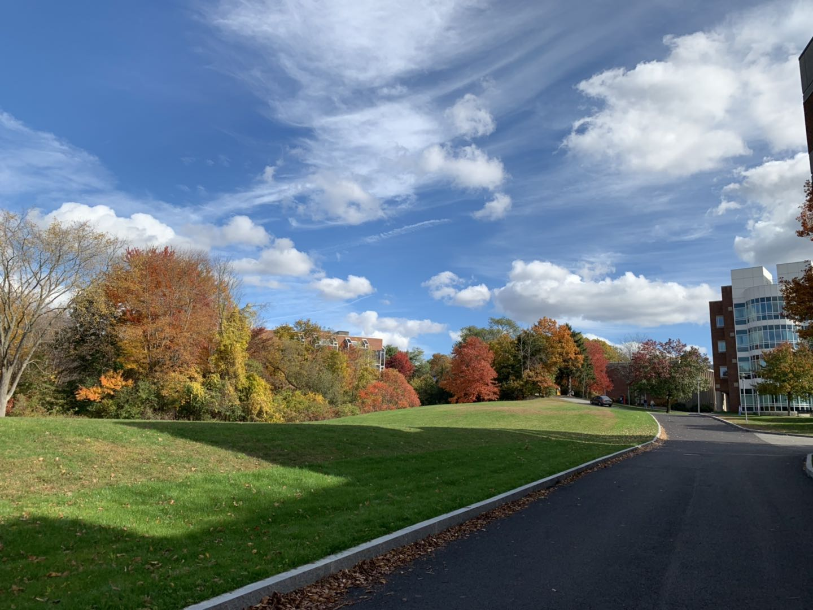
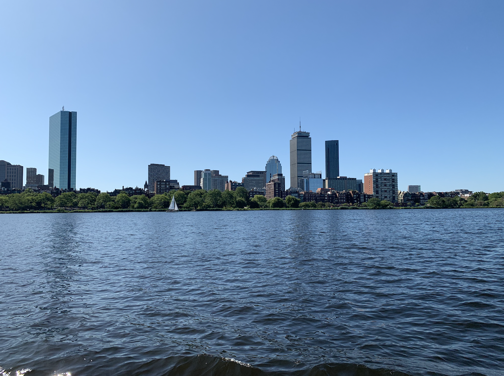
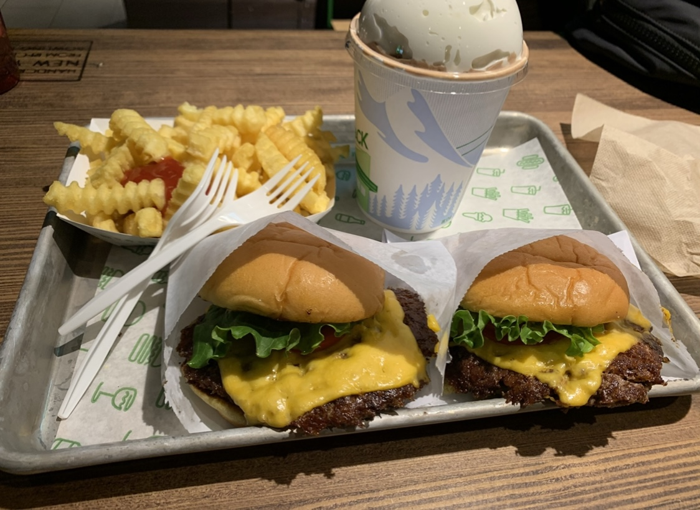
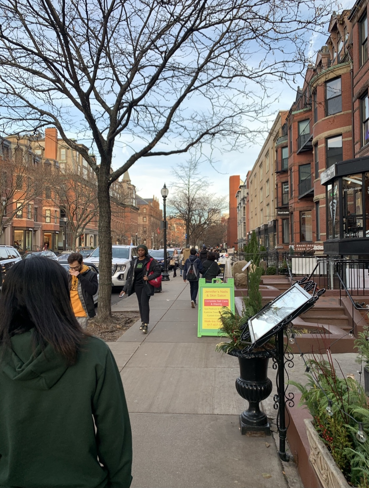

For the first two year of my college life, I studied at Brandeis University in the state of Massachusetts. These two pictures below show what the campus looks like. Since it is located in the small town of Waltham, the campus is away from the hustle and bustle of the city, which is great for study.
 

For the first few days of my college life, coming to an unfamiliar place made me a little bit homesick. I did not feel a sense of belonging or feeling at home until I received a warm welcome letter posted on my dorm door from my orientation leader. The interesting card content and the lovely drawing of a sheep gave me an instant sense of belonging on campus and made me feel at home. My orientation leader has played an important role in making me adapt to college life quickly.

During the orientation, we were also invited to visit the famous Charles River in Boston. The image below is the Charles river in Boston. You would also be able to see Harvard University and MIT on both sides of the river. On the weekends, I sometimes go to downtown Boston with my friends to relax ourselves through going shopping and tasting delicious food.
  